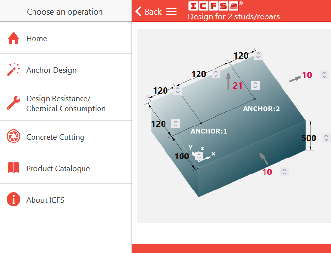
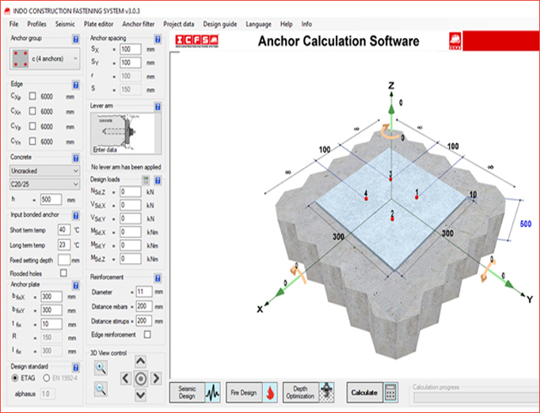
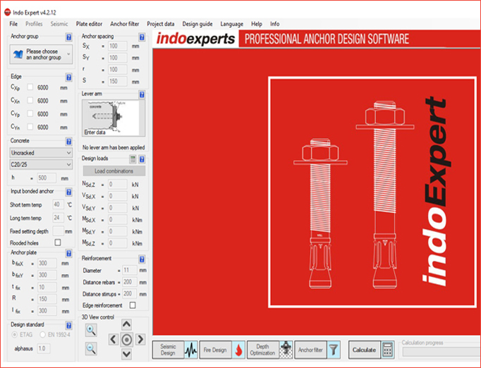

DESIGN SOFTWARE

ICFS Chemical Anchor / Rebar Design
Plan the selection of chemical anchors, required quantity of ICFS chemical anchoring resin, anchor bolt diameter, embedment depth, and concrete thickness. The fully interactive tool helps you identify the required calculations for safe and efficient design.
Design Problems / Chemical Calculation
This section is useful to calculate the required anchor loads, embedment capacity, and chemical consumption. ICFS provides engineers with high-quality tools for designing fastener behavior.
Load Calculation Assistance
ICFS provides reliable and realistic simulation of anchor performance. You can check tension, shear, and combined loads using easy-to-use UI with accurate calculations.
